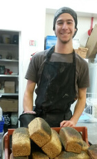
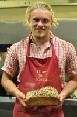
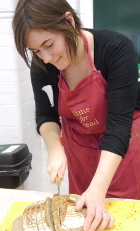
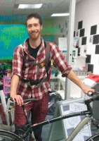

Currently kneading the Stirling bread world!
Théo
baker, director
I have been making bread since I arrived in Stirling as a student in 2011. Starting to make my own sourdough bread has been a true eye opener to the whole topic of food systems and sustainability. Along this path, I have met fantastic people and discovered fascinating projects like Bread Matters, Scotland the Bread and more.
A milestone in my development as a community supported baker was taking part in the 2014 ‘Baking for Community’ course at Bread Matters. These 4 days opened up new horizons and truly decided me to work towards a community-supported bakery project. Since then I ran Bread workshops, baked for community events, and started the Riverside Bakery Project with Nils and Tom.
Bread making, in addition to being a great tangible and practical skill, has got this incredible power to bring people together, it is also an opportunity to offer something different to the those around you, it is simple in its making, easy to give, and yet has such complex implications!
I am looking forward to the next stages of this project, such a great adventure so far…to be continued!
Nils (currently on the other side of the world)
baker, director
German side of the Riverside Bakery, he has been involved from the start, bringing time, hard work, great ideas, and laughter to the project. Nils is has been involved with many an agricultural project around the world, and is now studying environmental sciences at Stirling Unniversity, as well as running garden session with the F.E.A.ST permaculture garden at the university. Find our more here
Ashley
director

The resident lady-baker, I am a Canadian lass whose big loves in life include eating good bread, cycling in mountains, and hanging out with rare-breed sheep.
I'm a passionate advocate for a re-imagined Scottish food system. A food system that has thriving farmers and food producers at it's centre, one that builds vibrant communities and produces food for people that is ecologically and socially just. My professional background is in community engagement surrounding sustainable food – with a hefty dose of innovative gardening and farming thrown in too.
My interest in Real Bread began when I moved to the UK, and chanced upon Andrew Whitley's book “Bread Matters”. Although I had been sustainable-food-obsessed for a good number of years before that, I didn't realise just how far modern bread had veered off of its original course – from being a simple, nutritious part of the UK diet, one that requires no funny additives and just flour, water, salt, culture, and time – to something I wouldn't necessarily call bread today!
I started working for the Food Education at Stirling university (FEAST) project at Stirling University Students' Union in the summer of 2014. It was here I met Théo, Tom and Nils, and started to learn about the wondrous process of sourdough bread making, and getting to taste all their amazing bread creations. From the beginning, I was always the fledgling home bakery's biggest advocate - evidenced by myself enthusiastically and constantly talking everyone’s ear off about sourdough and the bakery!
Not much has changed today, where I still sing the praises of sourdough and the Bakery, but now in different roles - as one of the Directors, an apprentice baker, and the communications lady. I am keen to learn all aspects of the baking, and I am learning more with each 4 am rise and cycle to the bakery. I strongly believe that only good things can come from getting communities empowered to engage in their food system. This is why I really love and want to support the Community Interest Company structure of the Bakery – an innovative model that ensures the Bakery is run for, and by, the community. To this end, I'm keenly listening out for any suggestions, criticisms, ideas and revelations from you about Riverside Bakery – please get in touch!
Participated in building the bakery
Tom
baker
2014-2015 (now off to Alaska, follow him here!)
Coming from the Czech Republic where amazing and affordable bread is readily available in any little corner shop, delivered daily from local bakeries, living in the US and UK was sometimes a bit of a nightmare for me. From the bread point of view that is. Well, what better solution than to start making my own? I started experimenting with bread for the first time sometime in early 2013, only using yeast at first, but by the summer of the same year while living in Washington I managed to get my hands on some wheat sourdough and it just kind of happened from there. Lots of experimenting and weird bread shapes and combinations you’d be hard-pressed to find in any shop. At first I really didn’t know anything about sourdough, all the different techniques, and tips and tricks for bread making and certainly not any of the theory behind it, but that all came later. For the moment I was happy doing my own thing and enjoying (most of the time) tasty home-made bread. In September 2014 I moved in with Théo and Nils and from our mutual passion for food, baking and bread developed the Riverside Bakery.
I am passionate about anything and everything food related, from food production, sustainability and food systems to cooking and baking. Especially bread baking. Bread has been the staple food of the human species since the invention of agriculture and has been there all throughout the beginning of all of our civilizations and remains with us to this day in many shapes and forms. No matter where in the world you go, wherever you find people you will find bread. Every culture has their own from the Ethiopian soft, thin and spongy Injera made from teff flour from the smallest grain in the world through the Hispanic tortillas made from corn, native to the Americas to the well-familiar European continental wheat and rye breads. Made well, bread is nutritious with high amounts of carbohydrates, protein and minerals, it brings people together and it is certainly not as difficult to make as many people believe. Once you start making your own you won’t stop. Maybe ever.